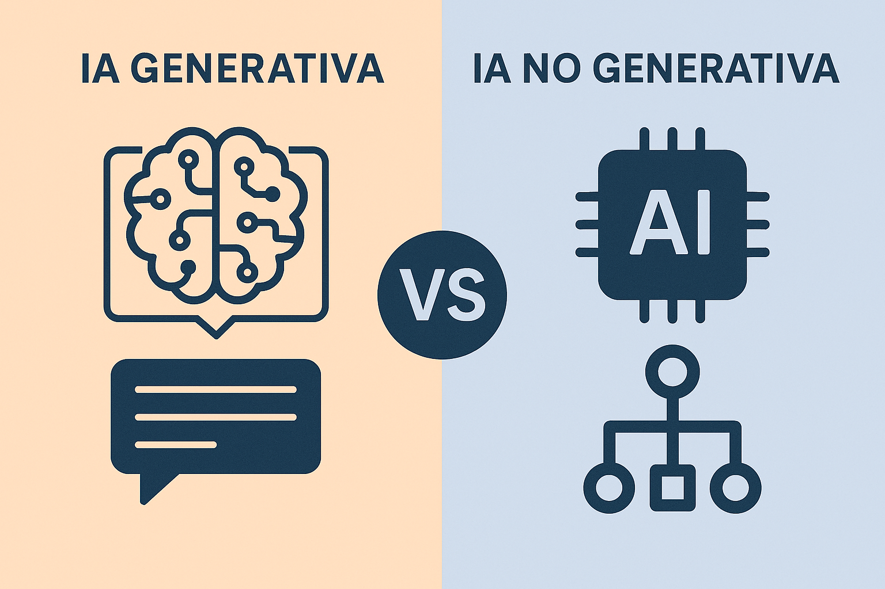
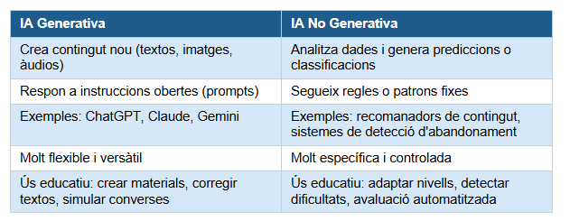

La Intel·ligència Artificial Generativa (IA Gen) és un subconjunt de la IA centrat en la producció de nou contingut (text, imatges, àudio, vídeo, codi informàtic) a partir de grans volums de dades d'entrenament. Ho fa en resposta a instrucciones o preguntes de l'usuari que s'anomenen prompts.
La base tècnica d'aquestos sistemes inclou xarxes neuronals basades en transformadors (com el GPT, Generative Pre-trained Transformer), mecanismes d'atenció i models de llenguatge a gran escala (LLM, Large Language Models). Tot i que pot semblar complex, el més important per al professorat és entendre el seu ús pràctic més que el funcionament intern.

IA generativa vs. IA no generativa
És important distingir dos grans tipus de sistemes d'IA, perquè els dos tenen usos educatius però funcionen de manera molt diferent:

En l'àmbit de la Formació Permanent de persones adultes els dos tipus tenen el seu lloc. La IA generativa és especialment útil per al professorat, per exemple, per a crear materials, adaptar textos o generar exercicis, mentre que la no generativa s'utilitza com a suport per a l'alumnat en format de plataformes que adapten la dificultat o que ofereixen autonomìa en l'aprenentatge.